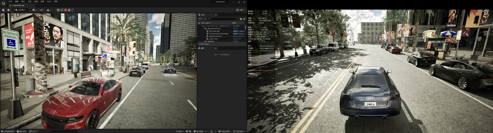

!!! 警告
这是一项正在进行的工作！！这个版本的Carla不被认为是一个稳定的版本。在接下来的几个月里，这个分支可能会发生许多重大变化，这可能会破坏您所做的任何修改。我们建议你把这个分支当作实验性的。
在 Windows 中使用虚幻引擎 5 编译 Carla¶
设置环境¶
本指南详细介绍了如何使用虚幻引擎 5 在 Windows 上从源代码构建 Carla。
在本地机器上克隆 Carla 的ue5-dev分支：
git clone -b ue5-dev https://github.com/carla-simulator/carla.git CarlaUE5
运行安装脚本：
cd CarlaUE5
CarlaSetup.bat
Setup.bat 脚本会安装所有必需的软件包，包括 Visual Studio 2022、Cmake、Python 软件包和虚幻引擎 5。它还会下载 Carla 内容并构建 Carla。因此，此批处理文件可能需要很长时间才能完成。
启动x64 Native tools
call "C:\Program Files\Microsoft Visual Studio\2022\Community\VC\Auxiliary\Build\vcvars64.bat"
!!! 注意
运行set PATH=D:\software\cmake-3.30.3-windows-x86_64\bin;%PATH%设置cmake版本，并使用虚拟环境执行Setup.bat。
!!! 笔记
* 此版本的 Carla 需要**虚幻引擎 5.3 的 Carla 分支**。您需要将您的 GitHub 帐户链接到 Epic Games，才能获得克隆虚幻引擎存储库的权限。如果您尚未链接您的帐户，请按照 [本指南](https://www.unrealengine.com/en-US/ue4-on-github) 操作
* 要使用 Carla Unreal Engine 5 以前的版本，请确保定义 CARLA_UNREAL_ENGINE_PATH 环境变量，指向 CARLA Unreal Engine 5 绝对路径。如果未定义此变量，Setup.bat 脚本将下载并构建 Carla Unreal Engine 5，**这需要额外 1 个多小时的构建时间和 225Gb 的磁盘空间**。
* Setup.bat 脚本检查 PATH 变量顶部是否安装了任何 Python 版本，否则安装 Python。**要使用您自己的 Python 版本，请确保在运行脚本之前为 Python 正确设置了 PATH 变量**。
* **应激活 Windows 开发者模式**，否则构建将失败。请参阅 [此处](https://learn.microsoft.com/en-us/gaming/game-bar/guide/developer-mode) 。
* **Carla 无法在外部磁盘上构建**，Windows 没有提供构建所需的读/写/执行权限。
构建并运行 Carla UE5¶
Setup.bat 文件本身启动以下命令，一旦您修改代码并希望重新启动，则需要使用以下命令：
!!! 警告
确保定义 CARLA_UNREAL_ENGINE_PATH 环境变量，指向 Carla Unreal Engine 5.3 绝对路径。Setup.bat 设置此变量，但如果采用其他方法安装要求，则可能无法设置。此外，Carla UE4 使用的环境变量是 UE4_ROOT。
- 配置。在 CarlaUE5 文件夹中打开 VS 2022 的 x64 Native Tools 命令提示符并运行以下命令（包括了下载并编译Carla的依赖库）：
cmake -G Ninja -S . -B Build -DCMAKE_BUILD_TYPE=Release -DBUILD_CARLA_UNREAL=ON -DCARLA_UNREAL_ENGINE_PATH=%CARLA_UNREAL_ENGINE_PATH%
- 构建 Carla。在 CarlaUE5 文件夹中打开 VS 2022 的 x64 Native Tools 命令提示符并运行以下命令（如果出现问题，建议每个依赖或模块分开进行编译）：
cmake --build Build
- 构建并安装 Python API。在 CarlaUE5 文件夹中打开 VS 2022 的 x64 Native Tools 命令提示符并运行以下命令：
cmake --build Build --target carla-python-api-install
- 启动编辑器。在 CarlaUE5 文件夹中打开 VS 2022 的 x64 Native Tools 命令提示符并运行以下命令：
cmake --build Build --target launch

使用 Carla UE5 构建软件包¶
!!! 警告 Carla UE5 的构建包尚未针对 Windows 进行全面测试。
在 CarlaUE5 文件夹中打开 VS 2022 的 x64 Native Tools 命令提示符并运行以下命令：
cmake --build Build --target package
该包将在目录 Build/Package 中生成。
运行包¶
软件包构建尚未针对 Windows 进行测试。
问题¶
- 编译过程中，中间某一步报错
为了提高排查错误的效率，可以把已经完成的一些步骤从
CarlaSetup.bat中注释掉，比如：下载Carla资产、安装vs2022、克隆虚幻5仓库、编译虚幻5等。
- 克隆虚幻5仓库报错：
error: RPC failed; curl 18 transfer closed with outstanding read data remaining
# 增加缓存 git config --global http.postBuffer 524288000 # 只拉取最近一次提交的内容 git clone -b ue5-dev-carla https://github.com/CarlaUnreal/UnrealEngine.git UnrealEngine5_carla --depth 1 # 将浅克隆转化完整克隆 git fetch --unshallow
-
编译时，sqlite3报错：
FAILED: CMakeFiles/sqlite3.dir/_deps/sqlite3-src/shell.c.obj -
无法安装Microsoft.VisualStudio.Community.Msi
删除文件夹
C：\Program Files （x86）\Windows Kits后重新安装。（前提是用网络安装版安装文件，不能用离线安装版）
- VS2022安装时候出现“计算机正忙于安装一个非Visual Studio的程序”
打开“任务管理器”。单击“详细信息”选项卡。查找“msiexec.exe”进程。如果有一个或多个，请全部选中，再选择“终止任务”。
- 安装python包时出现：
ValueError: check_hostname requires server_hostname
解决：关闭代理。
- fatal: fetch-pack: invalid index-pack output
只克隆一层
git clone --depth 1 https://gitlab.scm321.com/ufx/xxxx.git
- 编译Carla依赖时出错：
HTTP/2 stream 1 was not closed cleanly: PROTOCOL_ERROR (err 1)
解决：问题是由于HTTP/2引起的，在Git配置中禁用HTTP/2，改用HTTP/1.1
git config --global http.version HTTP/1.1
- 安装vs2022时出现win10 SDK安装错误：
解决：通过 链接 下载版本
10.0.20348.0的Win10 SDK进行安装。如果安装并启动vs2022后，仍出现：找不到 windows sdk 版本 10.0.20348.0的问题，则根据 链接 进行修复即可。即将文件
C:\Windows Kits\10\DesignTime\CommonConfiguration\Neutral\UAP\10.0.20348.0\UAP.props文件的第5行中WindowsSdkDir中增加<WindowsSdkDir Condition="'$(WindowsSdkDir)' == ''">。